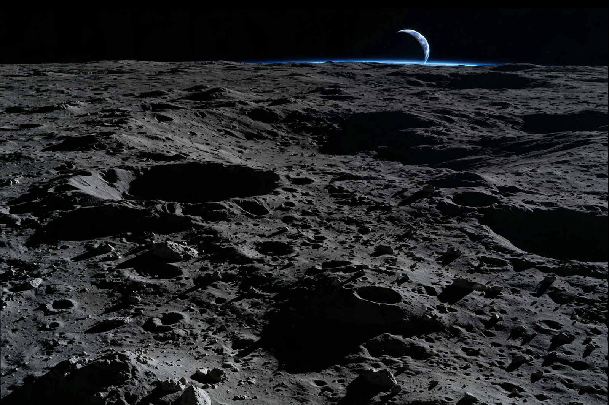
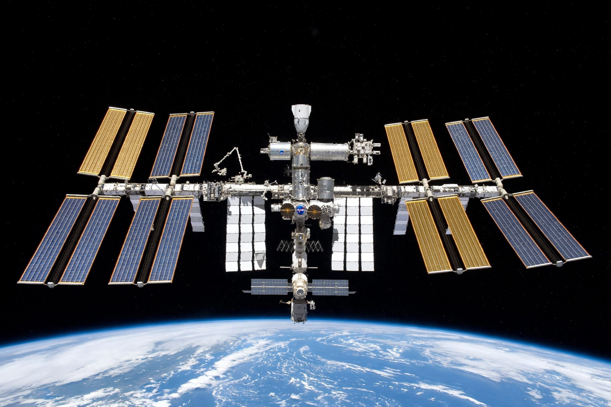
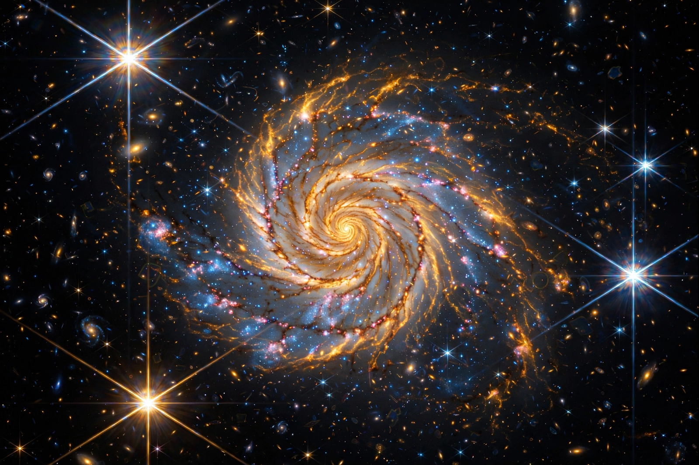
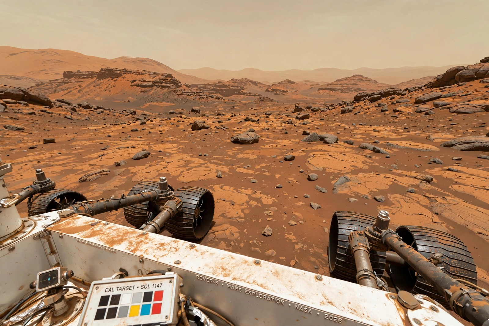

[Image: the Moon's cratered surface in shadowed greys, with Earth a blue crescent on the black horizon — Artemis programme imagery as remembered]With the Artemis campaign, NASA will land the first woman and first person of colour on the lunar surface, explore more of the Moon than ever before, and prepare for human missions to Mars. Artemis II will carry astronauts around the Moon, and Artemis III aims to land near the lunar South Pole.
Explore Artemis
[Image: the International Space Station against the black of space, solar arrays spread wide]Expedition crew members aboard the orbiting laboratory conduct experiments in biology, physics and Earth observation.

[Image: a swirling spiral galaxy photographed by the James Webb Space Telescope, in infrared golds and blues]The James Webb Space Telescope continues to peer back to the earliest galaxies, working alongside the Hubble Space Telescope.

[Image: Mars rusty-orange terrain and a six-wheeled rover in the foreground, from a rover camera]NASA's Perseverance rover caches rock samples in Jezero Crater for possible future return to Earth, while Ingenuity's flights demonstrated powered flight on another world.